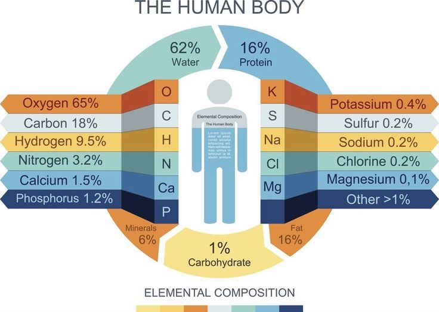

Pse është e rëndësishme të dimë për elementet kimike në trupin e njeriut?
Elementet kimike në trupin e njeriut janë themeli i jetës, sepse ato marrin pjesë në çdo proces biologjik që na mban gjallë. Oksigjeni siguron frymëmarrjen dhe prodhimin e energjisë, karboni ndërton molekulat organike si proteinat dhe karbohidratet, ndërsa hidrogjeni dhe azoti janë pjesë e ADN-së dhe strukturave qelizore. Mineralet si kalciumi, hekuri dhe jodi mbështesin kockat, gjakun dhe hormonet. Njohja e tyre është e rëndësishme sepse na ndihmon të kuptojmë si funksionon organizmi, të ndërtojmë një dietë të shëndetshme dhe të parandalojmë sëmundjet që lidhen me mungesën e këtyre elementeve. Në këtë mënyrë, kimia nuk është thjesht një shkencë abstrakte, por një udhërrëfyes i drejtpërdrejtë për mirëqenien tonë.

Elementet kryesore:
Elementet kryesore në trupin e njeriut janë oksigjeni, karboni, hidrogjeni dhe azoti. Këto përbëjnë bazën e jetës, sepse oksigjeni siguron energjinë për qelizat, karboni ndërton molekulat organike si proteinat dhe ADN-ja, hidrogjeni ruan ekuilibrin kimik dhe është pjesë e ujit, ndërsa azoti është i domosdoshëm për sintezën e proteinave dhe materialit gjenetik. Pa këto elemente, organizmi nuk mund të funksionojë, prandaj ato janë themeli i strukturës, energjisë dhe trashëgimisë biologjike të trupit tonë.
Mineralet:
Mineralet kryesore në trupin e njeriut janë thelbësore për strukturën dhe funksionet biologjike. Kalciumi është bazë për kockat dhe dhëmbët, por gjithashtu ndihmon në sinjalet nervore dhe kontraktimin e muskujve. Fosfori është pjesë e ADN-së dhe molekulës së energjisë ATP, duke e bërë të domosdoshëm për ruajtjen e energjisë dhe ndërtimin e skeletit. Kaliumi rregullon balancën e lëngjeve dhe është kritik për funksionimin e zemrës dhe muskujve. Natriumi ndihmon në ekuilibrin e ujit dhe presionin e gjakut, si dhe në transmetimin e impulseve nervore. Ndërsa Magnezi merr pjesë në qindra reaksione enzimatike, duke mbështetur metabolizmin, muskujt dhe sistemin nervor. Pa këto minerale, trupi nuk mund të ruajë ekuilibrin biologjik, energjinë dhe shëndetin e përgjithshëm.
Elementet gjurme:
Elementet gjurmë në trupin e njeriut, edhe pse gjenden në sasi shumë të vogla, janë jashtëzakonisht të rëndësishme për shëndetin. Hekuri është i domosdoshëm për formimin e hemoglobinës dhe transportin e oksigjenit në gjak, duke siguruar energjinë e qelizave. Zinku ndihmon sistemin imunitar, shërimin e plagëve dhe funksionin e enzimave, duke e bërë të rëndësishëm për mbrojtjen dhe zhvillimin e trupit. Jodi është i nevojshëm për prodhimin e hormoneve të tiroides që kontrollojnë metabolizmin dhe rritjen, ndërsa mungesa e tij shkakton çrregullime hormonale. Seleni ka rol antioksidues, duke mbrojtur qelizat nga dëmtimet dhe duke ndihmuar në funksionimin e tiroides dhe sistemit imunitar. Pra, edhe pse janë gjurmë, këto elemente janë jetike për energjinë, imunitetin, metabolizmin dhe mbrojtjen qelizore të organizmit.